Cómo leer el catálogo
La unidad de comparación es marca + aplicación + versión, porque varios modelos comparten interfaz. Las imágenes proceden de guías y publicaciones enlazadas; no son capturas tomadas en dispositivos propios. Los modelos citados son contexto de la familia, no identificación del teléfono capturado. Las etiquetas originales se conservan, principalmente en alemán e inglés.
Este es un catálogo de referencias verificables de distintas generaciones, no una auditoría de todas las versiones vigentes en 2026. No se ha verificado el comportamiento en dispositivos físicos, tamaños táctiles, accesibilidad, animaciones, bloqueo, notificaciones o persistencia tras reiniciar. Las centésimas visibles no acreditan precisión metrológica. Se estudia Cronómetro; alarma, reloj mundial y temporizador solo se muestran como acceso o contexto.
Pulsa cualquier captura para ampliarla. Cada ficha incluye la versión documentada, el funcionamiento básico, los elementos visibles y sus fuentes. Los colores y las valoraciones visuales son observaciones de estas imágenes, no mediciones del sistema de diseño.
Cobertura de pantallas
«Sí» significa evidencia visual del estado, aunque marcha y vueltas pueden aparecer en una misma captura. «Sin captura» no significa que la función no exista.
| Familia | Versión | Cero | Marcha | Vueltas | Pausa |
|---|
| Apple iPhone | iOS 17 | Sí | Sí | Sí | Sin captura |
| Samsung Galaxy | One UI 6 | Sí | Sí | Sí | Sí |
| Google Pixel | Clock 8.1 | Sin captura | Sí | Sí | Sin captura |
| Xiaomi | HyperOS 2 | Sí | Sí | Sí | Sí |
| OnePlus | OxygenOS 12 | Sí | Sí | Sí | Sí |
| Huawei | EMUI 12 | Sí | Sí | Sí | Sí |
| OPPO | ColorOS 13 | Sí | Sí | Sí | Sin captura |
Hallazgos visuales
Lectura inmediata. iPhone y Xiaomi concentran el peso visual en el número. Son referencias útiles para estudiar la jerarquía del tiempo total.
Comparación de parciales. Samsung separa duración y acumulado en columnas. Pixel cambia la lista por tarjetas, lo que da identidad visual a cada vuelta.
Sensación de instrumento. Huawei y OPPO dan protagonismo a la esfera. OnePlus utiliza un arco más ligero alrededor del contador.
Claridad de las acciones. Samsung e iPhone escriben las acciones; Xiaomi, OnePlus y Huawei recurren más a iconos. Pixel Expressive amplía especialmente los botones.
Aspectos para probar. Evaluar legibilidad con muchas vueltas, alcance con una mano y comprensión de restablecer frente a pausar. Son hipótesis de diseño, no resultados de pruebas con usuarios.
iOS 17 en la secuencia principalApple iPhone
Familia iPhone. El terminal exacto de TechBone no está identificado.
Fondo negro, cifras blancas muy finas y grandes, controles circulares y acento naranja. Verde para iniciar y rojo para detener. La lectura del tiempo domina la pantalla.
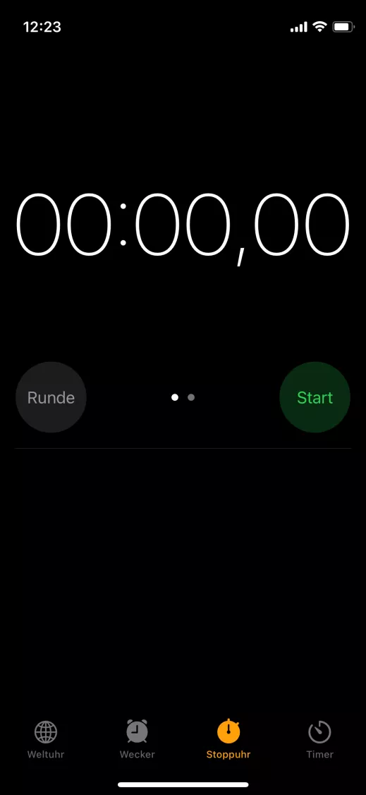
Inicio en ceroVuelta desactivada y Start disponible.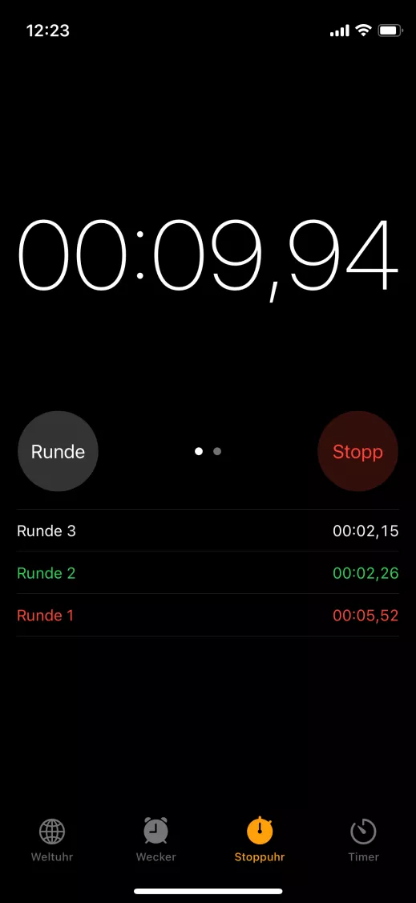
En marcha con vueltasStopp detiene; las vueltas permanecen debajo.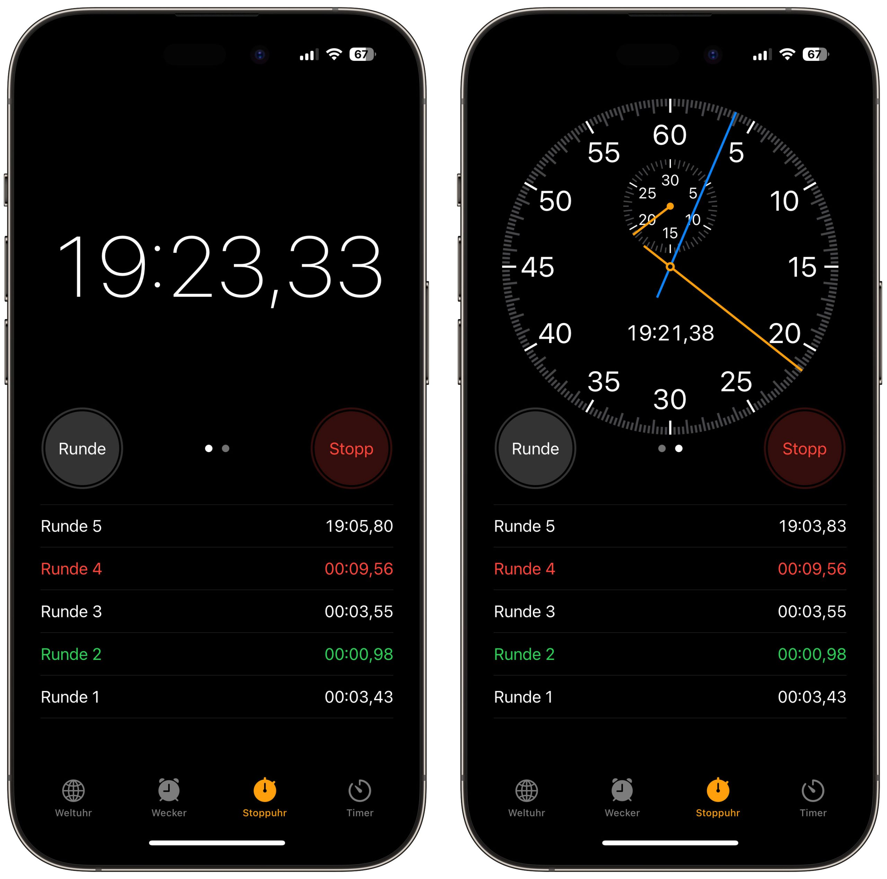
Digital y analógicoComparativa editorial de 2023 con marco del teléfono.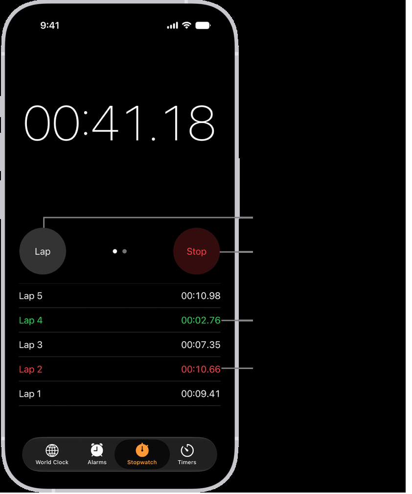
Referencia de AppleImagen de documentación; no acredita iOS 17.Elementos de pantalla
- Tiempo total en la mitad superior.
- Dos botones: Vuelta y Start o Stopp.
- Lista inferior de vueltas con extremos verde y rojo.
- Dos puntos indican la alternativa digital o analógica.
Funcionamiento básico
- Abrir Reloj y entrar en Cronómetro.
- Iniciar y registrar vueltas sin detener el total.
- Pausar conserva la sesión; reanudar continúa; restablecer borra el total y las vueltas.
- Deslizar horizontalmente cambia entre vista digital y analógica.
La secuencia iOS 17 cubre cero y marcha con vueltas, sin captura de pausa. La comparativa analógica es de febrero de 2023, sin versión exacta indicada. La imagen de la guía de Apple se incluye separadamente, sin atribuirla a iOS 17.
Fuentes
Capturas de acceso y contexto incluidas en el kit
Los archivos 01 y 02 muestran acceso desde Inicio y la sección inicial de Reloj en los kits de TechBone. No se cuentan como estados del cronómetro.
Samsung Galaxy
Familia Galaxy. La guía vincula Galaxy S24 Ultra y A55, entre otros; no identifica el terminal capturado.
Interfaz clara y sobria, mucho espacio vacío y contador centrado. Botones bajos en forma de pastilla; acción principal violeta al iniciar o continuar y roja al detener.
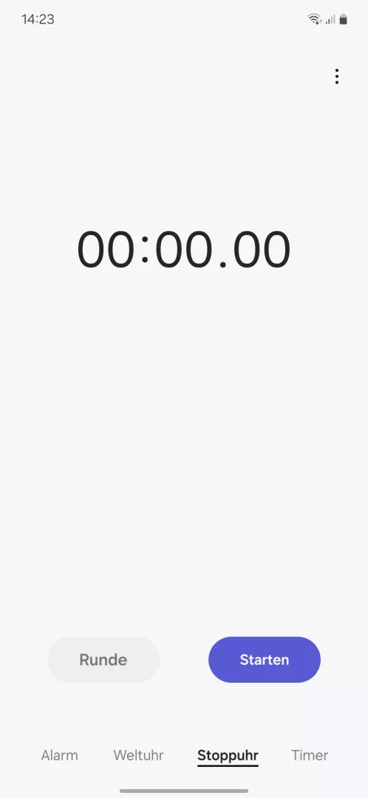
Inicio en ceroRunde inactivo y Starten disponible.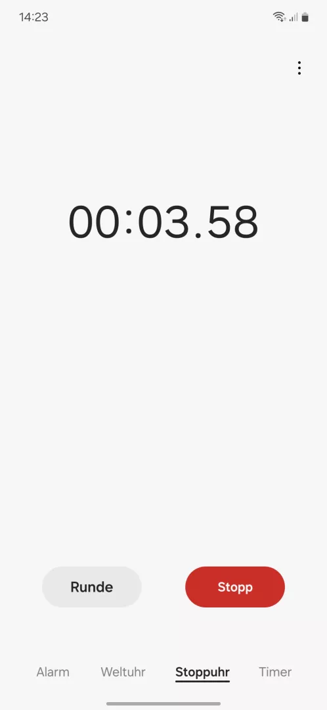
Medición en marchaRunde y Stopp son las acciones principales.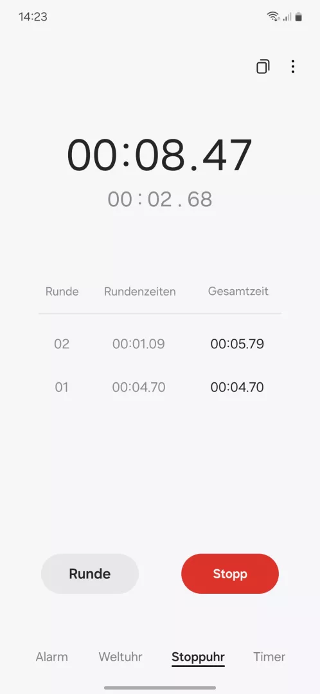
Vueltas registradasTabla de parciales y tiempo acumulado.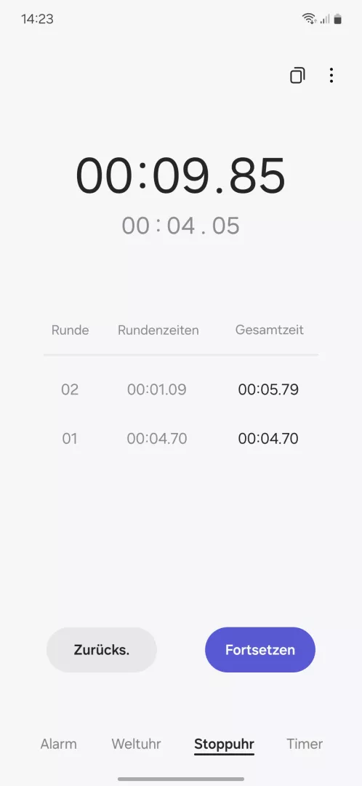
Pausa y reanudaciónZurücks. restablece; Fortsetzen continúa.Elementos de pantalla
- Total grande y parcial actual más pequeño.
- Tabla de vuelta, duración y acumulado.
- Controles laterales con texto.
- Pestañas inferiores subrayadas y acceso superior a copiar con vueltas.
Funcionamiento básico
- Abrir Reloj y entrar en Cronómetro.
- Iniciar y registrar vueltas sin detener el total.
- Pausar conserva la sesión; reanudar continúa; restablecer borra el total y las vueltas.
Referencia visual One UI 6. No se presenta como captura de One UI 8 ni como prueba específica de un Galaxy S26.
Fuentes
Capturas de acceso y contexto incluidas en el kit
Los archivos 01 y 02 muestran acceso desde Inicio y la sección inicial de Reloj en los kits de TechBone. No se cuentan como estados del cronómetro.
Google Pixel
Familia Pixel y otros Android con Google Clock. Modelos exactos capturados no identificados.
Tema oscuro, cifras prominentes, botones muy grandes apilados y esquinas redondeadas. Las vueltas se agrupan en tarjetas. Las capturas Expressive muestran dos paletas diferentes.
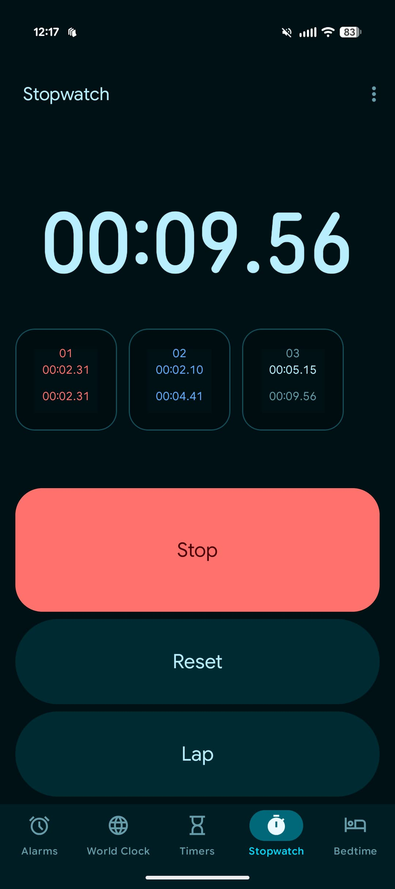
Expressive con vueltasPublicada el 22 de agosto de 2025.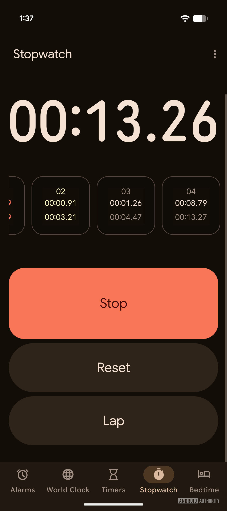
Expressive en otra paletaSegunda captura de Android Authority.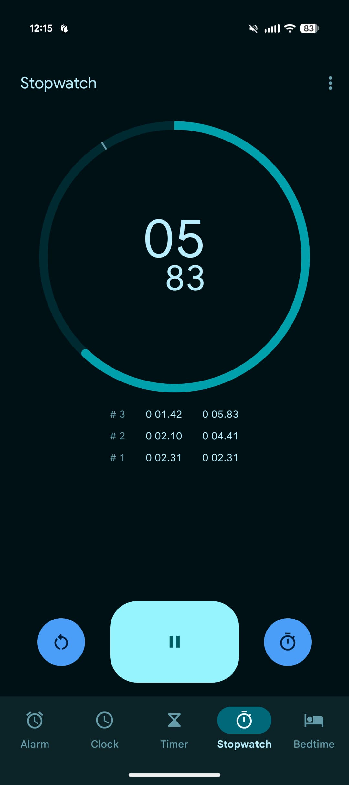
Diseño anterior Material YouAnillo e iconos; no pertenece a la secuencia 8.1.Elementos de pantalla
- Contador digital en la zona superior.
- Tarjetas numeradas para parciales.
- Stop, Reset y Lap ocupan el ancho inferior.
- Navegación inferior con cinco secciones.
Funcionamiento básico
- Entrar en Stopwatch desde la barra inferior.
- La captura Expressive muestra una sesión activa con vueltas y acciones Stop, Reset y Lap.
- La referencia anterior presenta pausa central y acciones laterales con iconos.
Cobertura parcial: no hay capturas independientes de cero ni pausa en Clock 8.1. Material You se incluye para comparar; su versión exacta no está identificada. No se afirma que 8.1 sea la versión más reciente en noviembre de 2026.
Fuentes
Capturas de acceso y contexto incluidas en el kit
Los archivos 01 y 02 muestran acceso desde Inicio y la sección inicial de Reloj en los kits de TechBone. No se cuentan como estados del cronómetro.
Xiaomi Redmi y POCO
La guía vincula Xiaomi 14 Ultra y Redmi Note 13 Pro 5G, entre otros. POCO requiere comprobar la app instalada; terminal capturado no identificado.
Fondo claro, cifras negras de peso marcado y acciones azules con iconos. La pantalla inicial dedica casi todo el espacio al contador; con vueltas, el total sube.
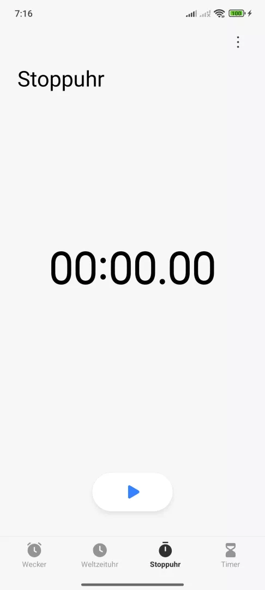
Inicio en ceroReproducción azul en una pastilla blanca.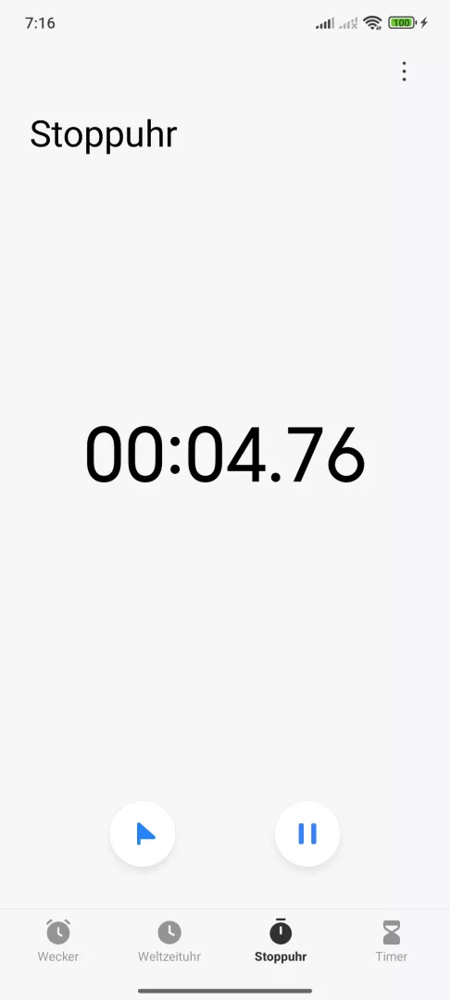
Medición en marchaBandera y pausa separadas.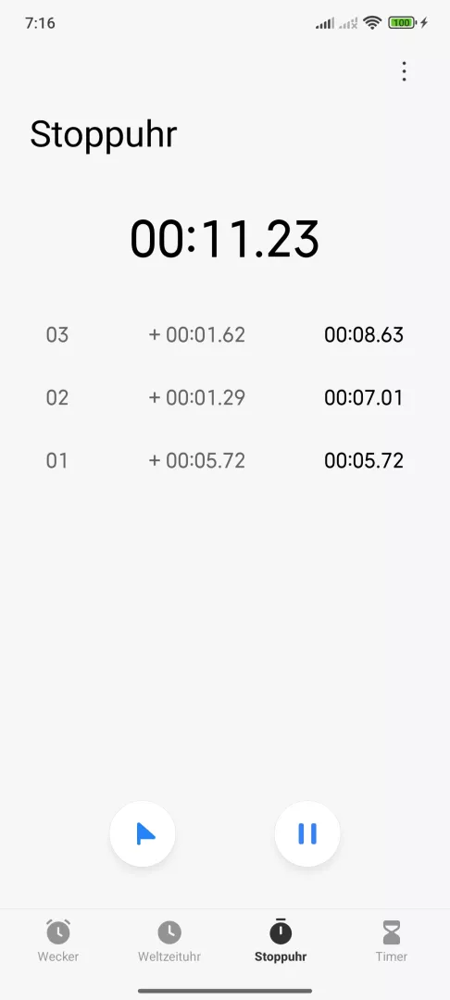
Listado de vueltasParciales y acumulados bajo el total.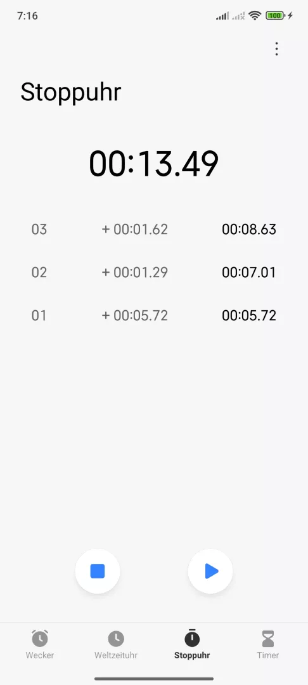
PausaRestablecimiento y reproducción.Elementos de pantalla
- Título superior y menú de tres puntos.
- Contador y lista de vuelta, parcial y acumulado.
- Bandera y pausa durante la marcha.
- Cuadrado para restablecer y triángulo para continuar.
Funcionamiento básico
- Abrir Reloj y entrar en Cronómetro.
- Iniciar y registrar vueltas sin detener el total.
- Pausar conserva la sesión; reanudar continúa; restablecer borra el total y las vueltas.
Capturas HyperOS 2; no se extrapolan a HyperOS 3. Pertenecer a Xiaomi, Redmi o POCO no garantiza idéntica aplicación o versión.
Fuentes
Capturas de acceso y contexto incluidas en el kit
Los archivos 01 y 02 muestran acceso desde Inicio y la sección inicial de Reloj en los kits de TechBone. No se cuentan como estados del cronómetro.
OnePlus
Familia OnePlus con esta versión de Reloj. Terminal capturado no identificado; no atribuir estas imágenes a OnePlus 13 o 15.
Contador dentro de una esfera fina que se convierte en arco azul. Fondo claro, controles circulares y poco texto. Las vueltas también se distinguen por color.
Inicio en ceroCírculo con tiempo y reproducción azul.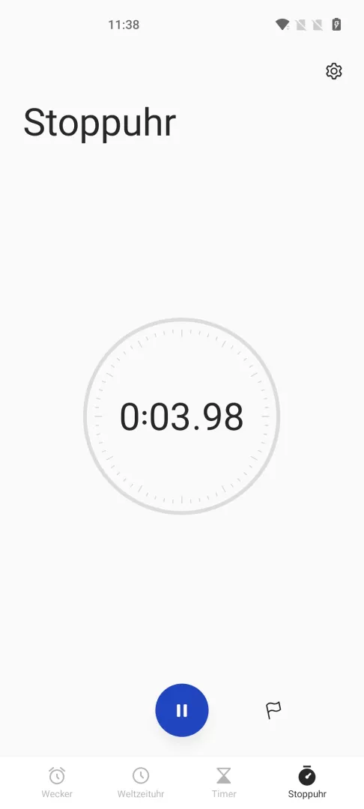
Medición en marchaPausa central y bandera lateral.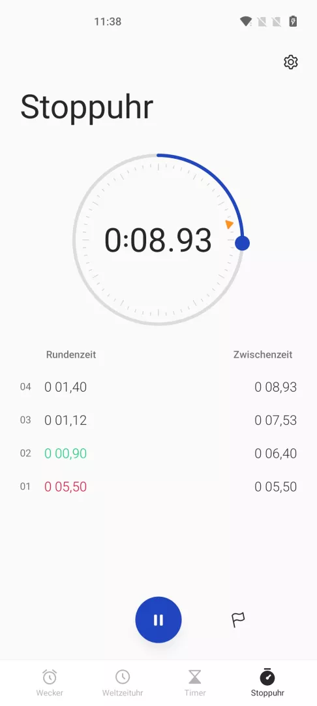
VueltasArco azul y tabla de parciales.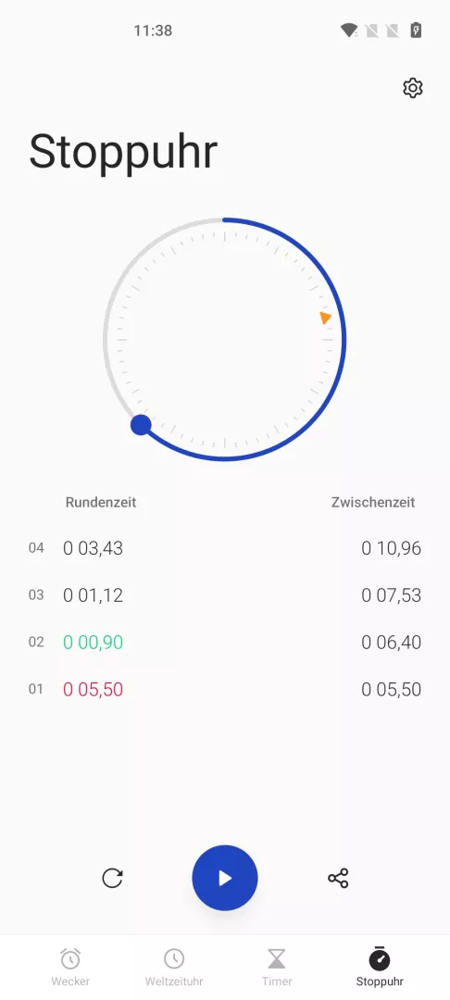
Pausa y accionesRestablecer, continuar y compartir. Elementos de pantalla
- Esfera con tiempo total.
- Tabla de duración y tiempo intermedio.
- Pausa central y bandera a la derecha.
- En pausa: restablecer, reproducir y compartir.
Funcionamiento básico
- Abrir Reloj y entrar en Cronómetro.
- Iniciar y registrar vueltas sin detener el total.
- Pausar conserva la sesión; reanudar continúa; restablecer borra el total y las vueltas.
- El icono de compartir aparece en pausa; el manual de OnePlus también documenta compartir resultados.
Referencia histórica OxygenOS 12. No representa OxygenOS 16. No se capturó la hoja del sistema para compartir.
Fuentes
Capturas de acceso y contexto incluidas en el kit
Los archivos 01 y 02 muestran acceso desde Inicio y la sección inicial de Reloj en los kits de TechBone. No se cuentan como estados del cronómetro.
Huawei
Familia Huawei con EMUI 12. La documentación incluye P30, P40 y Mate 40 Pro, entre otros; terminal capturado no identificado.
Esfera analógica prominente, graduaciones y aguja naranja, con volumen y sombra suaves. El dato digital queda debajo. Las vueltas forman tarjetas blancas sobre fondo claro.
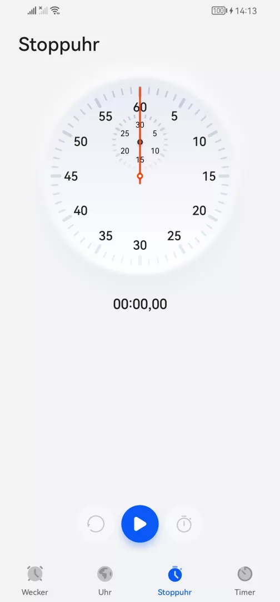
Inicio en ceroEsfera y reproducción central.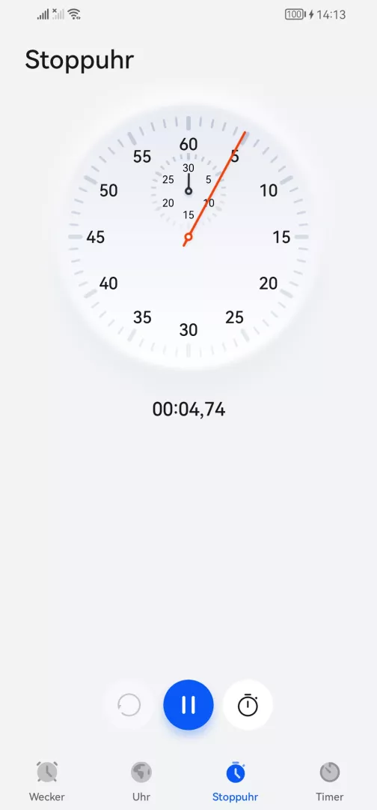
Medición en marchaAguja desplazada y botón de pausa.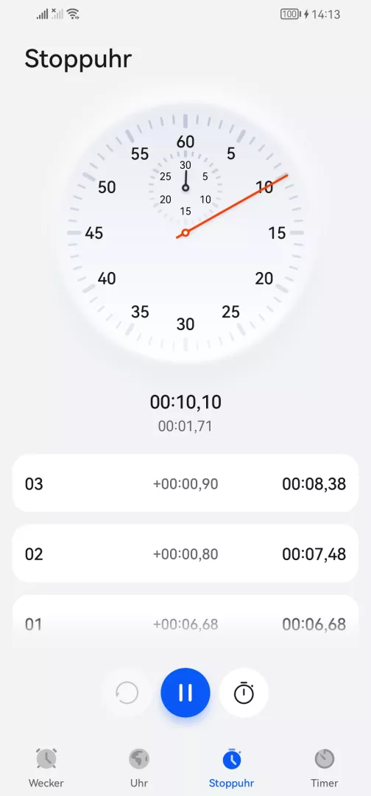
VueltasTarjetas de parciales y acumulado.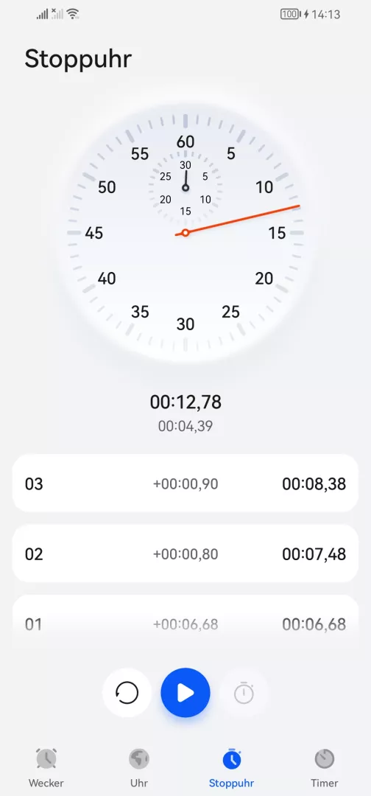
PausaTiempo retenido y reproducción disponible.Elementos de pantalla
- Esfera analógica superior.
- Total digital y parcial activo debajo.
- Lista numerada de tiempos.
- Botón azul central y controles secundarios laterales.
Funcionamiento básico
- Abrir Reloj y entrar en Cronómetro.
- Iniciar y registrar vueltas sin detener el total.
- Pausar conserva la sesión; reanudar continúa; restablecer borra el total y las vueltas.
Capturas EMUI 12. No se trasladan a HarmonyOS NEXT ni a las familias Pura recientes.
Fuentes
Capturas de acceso y contexto incluidas en el kit
Los archivos 01 y 02 muestran acceso desde Inicio y la sección inicial de Reloj en los kits de TechBone. No se cuentan como estados del cronómetro.
OPPO
Familia OPPO con esta aplicación Reloj. Modelo exacto no identificado en la fuente.
Esfera blanca con relieve y sombra azul violeta. El tiempo digital ocupa el centro; parte de sus dígitos se acentúa en azul. Combina una metáfora de instrumento físico y controles modernos.
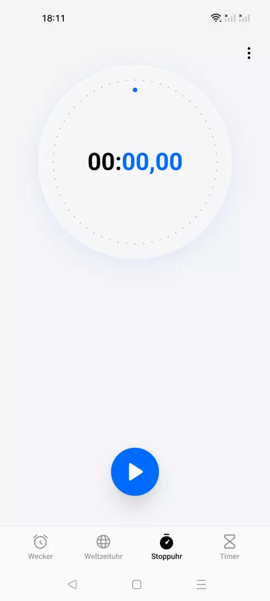
Inicio en ceroEsfera y reproducción azul.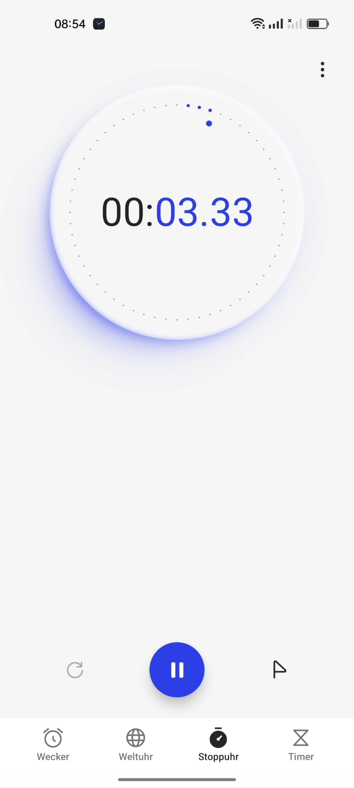
Medición en marchaRestablecer, pausa y bandera.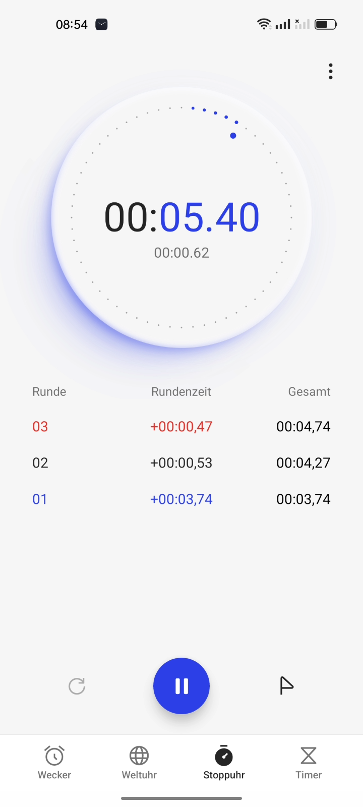
VueltasTabla bajo la esfera y parcial actual.Elementos de pantalla
- Esfera grande con marcas discretas.
- Pausa azul central y bandera lateral.
- Restablecimiento con flecha circular.
- Tabla de vuelta, duración y total; extremos coloreados.
Funcionamiento básico
- Abrir Reloj, entrar en Cronómetro e iniciar con el triángulo.
- En marcha, la bandera añade vueltas y pausa detiene la medición.
Marcha y vueltas proceden de la secuencia ColorOS 13 archivada en la misma página. No hay captura independiente de pausa. No representan ColorOS 15 o 16.
Fuentes
Capturas de acceso y contexto incluidas en el kit
Los archivos 01 y 02 muestran acceso desde Inicio y la sección inicial de Reloj en los kits de TechBone. No se cuentan como estados del cronómetro.
Procedencia y uso
Capturas y diseños pertenecen a sus respectivos autores y fabricantes. Se incluyen para análisis comparativo con atribución. No se ha concedido una licencia de reutilización comercial. La ficha CSV del kit conserva la URL de cada imagen, versión, estado y fuente.
La tipografía se describe por su apariencia: no se identifican familias tipográficas ni valores de color exactos sin evidencia técnica.